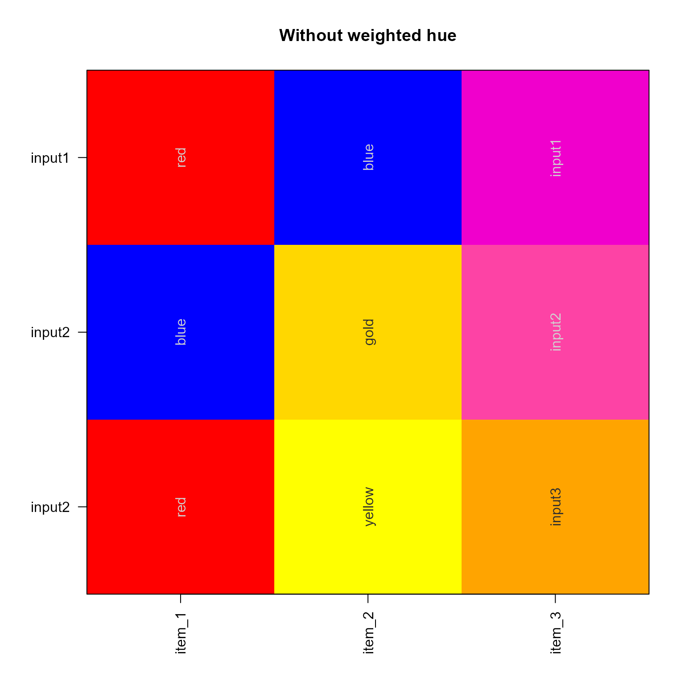

Average colors by list
Arguments
- x
listof character vectors.- useWeightedHue
logical indicating whether to weight the hue wheel using
colorjam::h2hw()andcolorjam::hw2h()which effectively converts the RGB angles to RYB (red-yellow-blue), and therefore makes additive color blending more sensible. Specifically, "yellow and blue makes green".- ...
additional arguments are ignored.
Details
This is a simple wrapper function intended to provide a rapid average color, when supplied a list of color vectors in hex or R color name format.
This function simply converts each color to HCL, determines the
color hue angle (from 0 to 360) then calculates the average angular
color hue using avg_angles(), then applies that to the maximum
C and L values to determine the new color. It is deliberately intended
to ignore muddiness when averaging multiple colors.
Colors are only modified for elements with 2 or more entries.
This method also only operates on the unique set of colors, so it should be substantially more efficient on large lists that contain only a few unique subsets of colors.
See also
Other jam utility functions:
ashape(),
avg_angles(),
cell_fun_bivariate(),
collapse_mem_clusters(),
colorRamp2D(),
curateIPAcolnames(),
deconcat_df2(),
display_colorRamp2D(),
enrichList2geneHitList(),
find_colname(),
find_enrich_colnames(),
get_hull_data(),
get_igraph_layout(),
gsubs_remove(),
handle_igraph_param_list(),
isColorBlank(),
make_legend_bivariate(),
make_point_hull(),
mem_find_overlap(),
order_colors(),
rank_mem_clusters(),
rotate_coordinates(),
summarize_node_spacing(),
with_ht_opts(),
xyAngle()
Examples
x <- list(input1=c(red="red", blue="blue"),
input2=c(blue="blue", gold="gold"),
input3=c(red="red", yellow="yellow"));
x_avg <- avg_colors_by_list(x, useWeightedHue=TRUE);
jamba::showColors(list(
input1=c(x[[1]], x_avg[1]),
input2=c(x[[2]], x_avg[2]),
input2=c(x[[3]], x_avg[3])),
main="With weighted hue")
x_avg <- avg_colors_by_list(x, useWeightedHue=FALSE);
jamba::showColors(list(
input1=c(x[[1]], x_avg[1]),
input2=c(x[[2]], x_avg[2]),
input2=c(x[[3]], x_avg[3])),
main="Without weighted hue")
